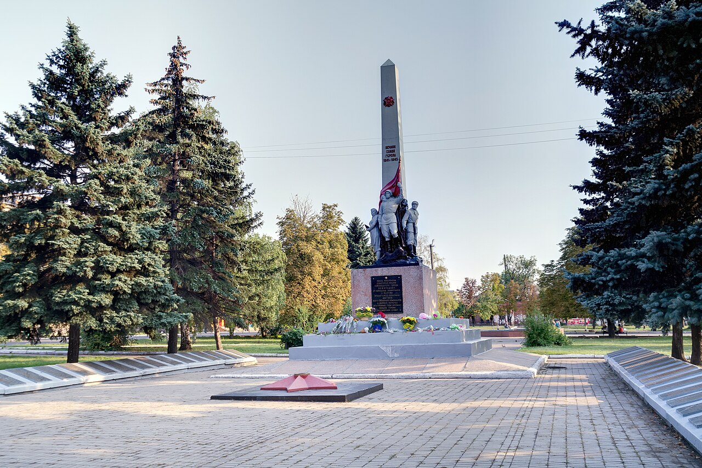

Литературно-исторический музей
Место знакомства с прошлым города и литературным наследием. С 1998 года история музея связана с отдельной экспозицией о Владимире Сосюре.
ДЕБАЛЬЦЕВО / 03
Музейные коллекции, литературное наследие и творчество жителей Дебальцево.

МЕСТА ПАМЯТИ
Культурное наследие Дебальцево складывается из семейных архивов, музейных собраний и памяти о людях города.
Городской литературно-исторический музей вырос из народного музея 1967 года. Его собрание включает документы, фотографии, предметы быта и работы местных художников.
Энциклопедическая статья описывает выставки художественной керамики Ж. Травинской и картин семьи Андросковых. Это сведения об истории экспозиций; текущий состав выставок следует уточнять у музея.
КУЛЬТУРНЫЕ ТОЧКИ
Место знакомства с прошлым города и литературным наследием. С 1998 года история музея связана с отдельной экспозицией о Владимире Сосюре.
Организует концерты, тематические встречи, детские занятия и городские акции. Театрализованные программы и любительское творчество входят в клубную жизнь города.
Культурная карта указывает школу искусств и три библиотеки. Это площадки для обучения, чтения, выставок и встреч жителей.
В просмотренных источниках нет подтверждения действующего самостоятельного профессионального театра или отдельной художественной галереи. Изобразительное искусство представлено музейными выставками, сценическое — программами центра культуры. Подтверждённая афиша отдельного городского фестиваля на дату проверки не найдена; вымышленные мероприятия не добавлены.
ИМЯ В ИСТОРИИ ГОРОДА
Поэт, родившийся в Дебальцево в 1898 году.
Владимир Николаевич Сосюра — известный украинский поэт. Его биография связана с Донбассом, а литературное наследие стало частью музейной истории города.
К столетию со дня рождения поэта в 1998 году была открыта посвящённая ему комната-музей. Сохранение памяти о писателе связывает городскую историю с историей литературы.
Литературная память помогает увидеть город через судьбу одного человека.
Редакционная заметка автора сайта
СВЕЖАЯ ПУБЛИКАЦИЯ
Культура
Коллектив «Родники» школы № 3 участвовал в акции «Учимся в Донбассе». Ребята представили вокальный номер.
Читать источник ↗